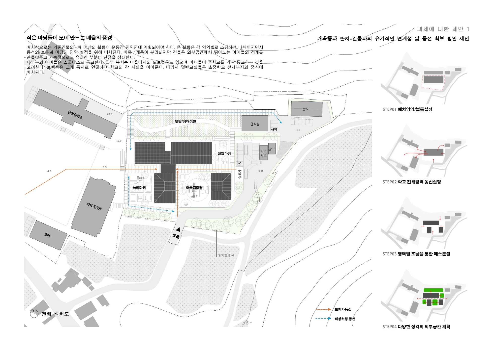
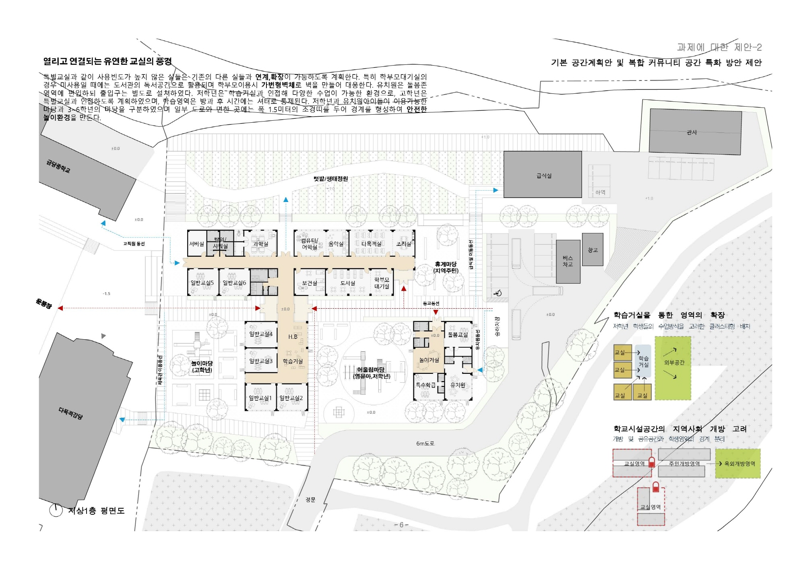
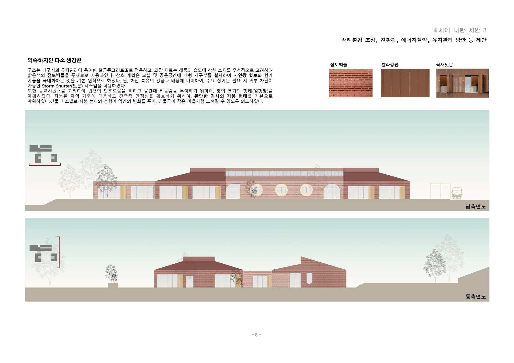
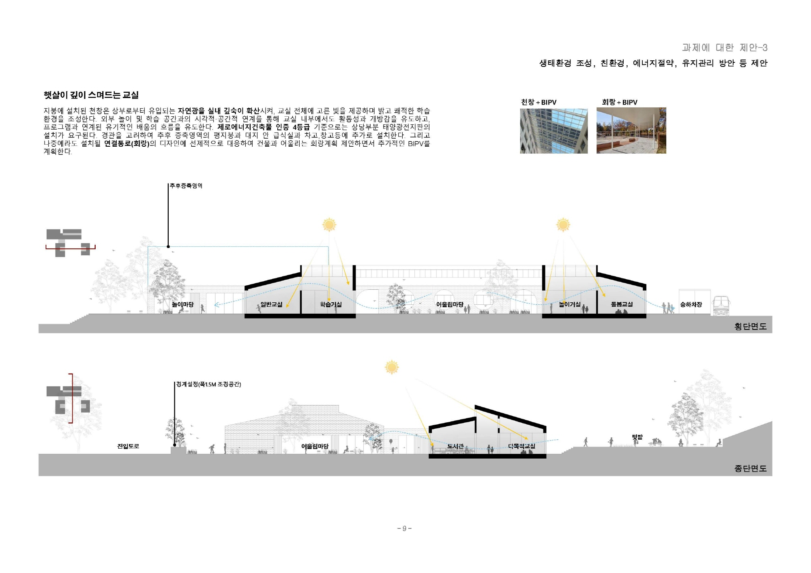
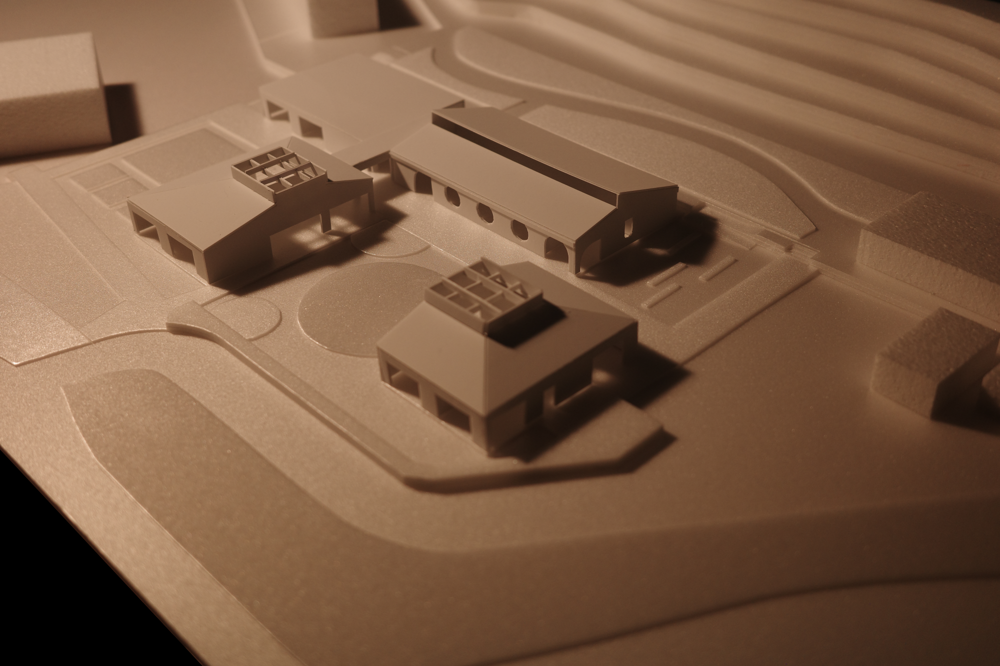
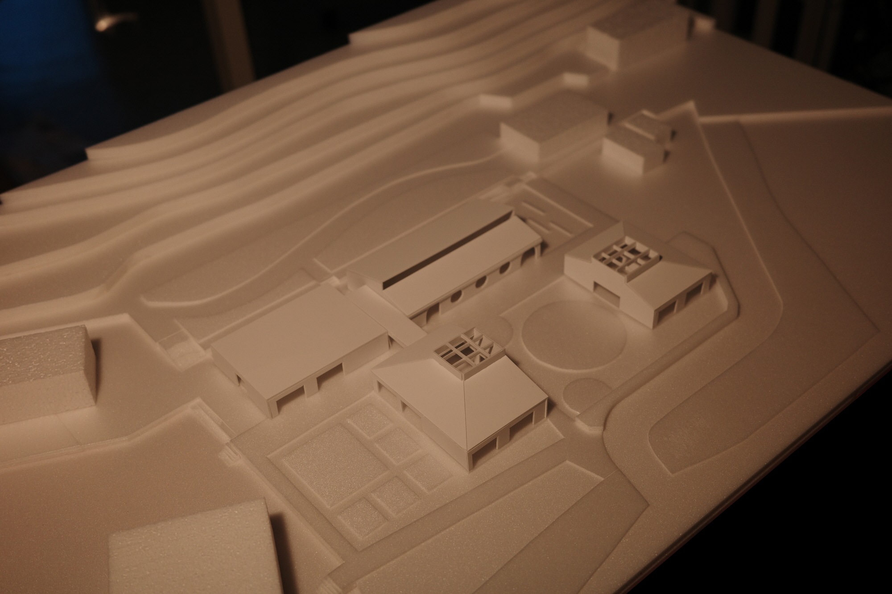
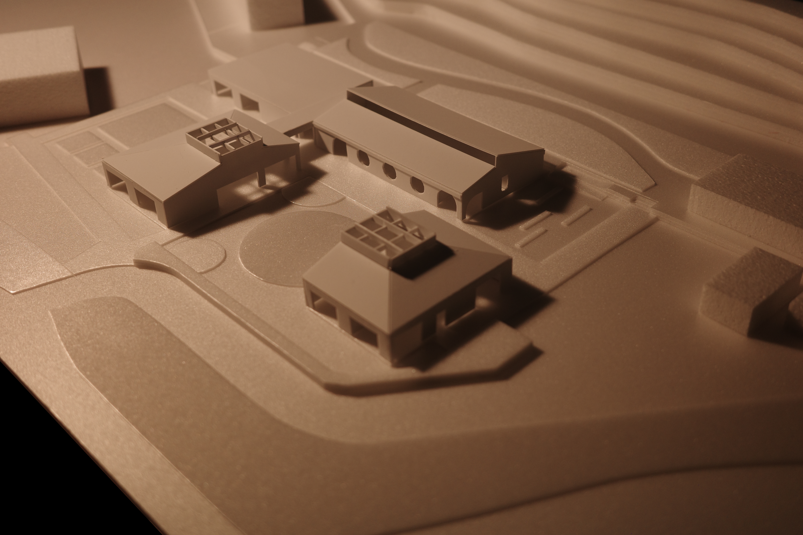
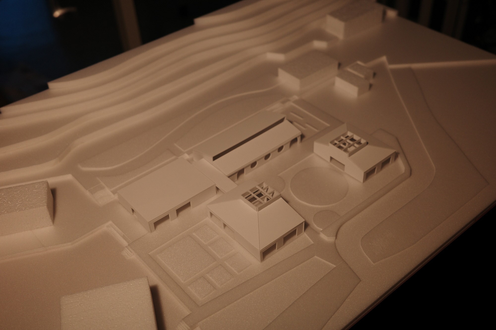
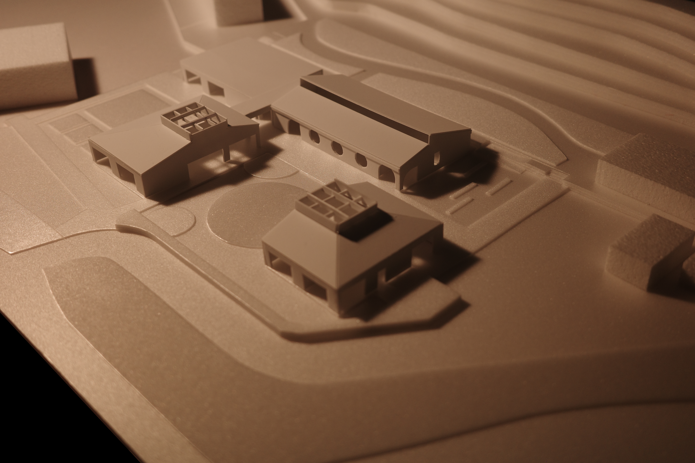
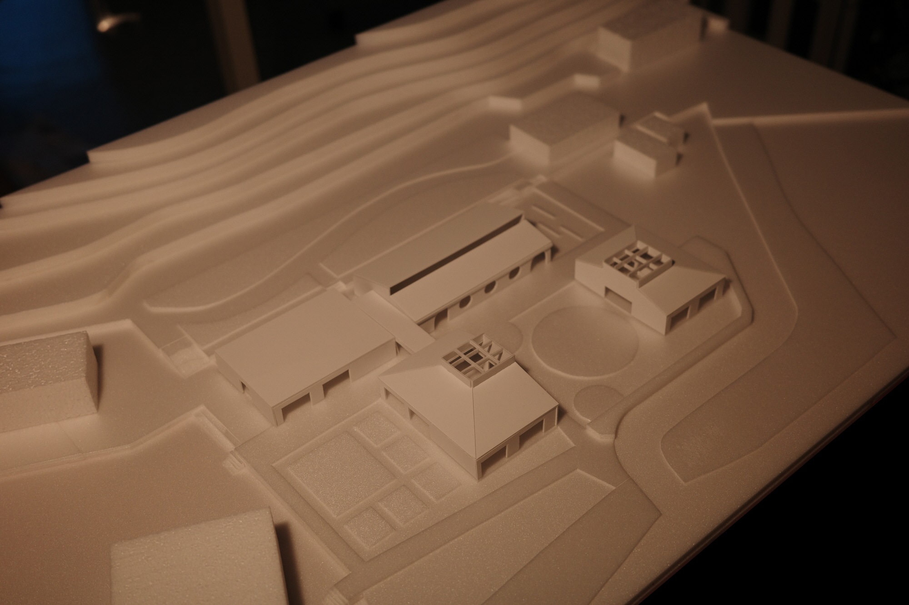

금당초등학교 공간재구조화
금당초는 전남 완도 금당도에 위치한 소규모 학교로, 현재 초·중 통합 운영에 따라 운동장·체육관·행정 지원 기능을 공유하는 하나의 학교 단지로 작동한다. 본 계획은 섬의 생활 스케일과 이동 방식을 반영하여, 보차 분리와 스쿨버스 동선, 공사 중 안전 확보를 핵심 조건으로 설정하였다.
배치의 중심 개념은 ‘하나의 큰 마당’이 아니라 쓰임이 다른 ‘여러 개의 작은 마당’이다. 건물로 인해 분절된 외부공간을 각 학습영역과 자연스럽게 연결하고, 승하차장에서 교실로 이어지는 등교 시퀀스가 마을 골목처럼 느껴지도록 구성하였다. 교실 영역은 이용자·시간대에 따라 방범셔터 등으로 경계를 설정해 개방과 보안을 함께 담을 수 있도록 계획했다.
형태는 해풍을 막기 위해 모여 배치된 섬 마을의 집들과 그 사이 골목·볕마당에서 착안했다. 주구조는 내구성과 시공성을 고려해 철근콘크리트조로 계획하고, 외장 재료는 점토벽돌의 따뜻한 물성이 해풍 속에서도 자연스럽게 유지되도록 선택했다. 천창과 다양한 층고를 통해 자연광이 깊게 확산되는 교실 환경을 제안한다.




 




